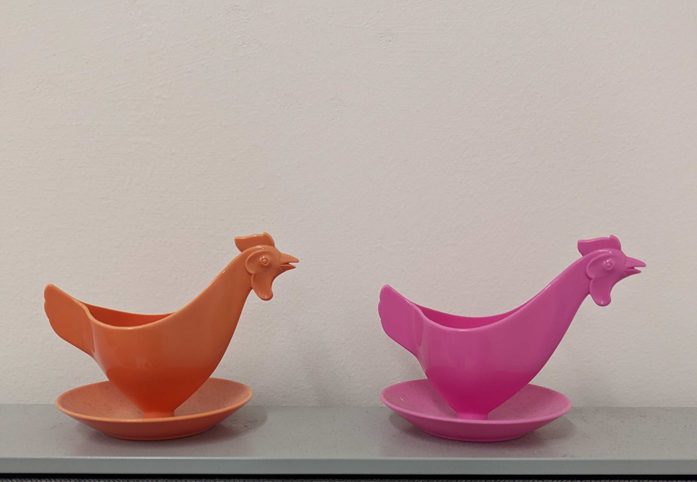
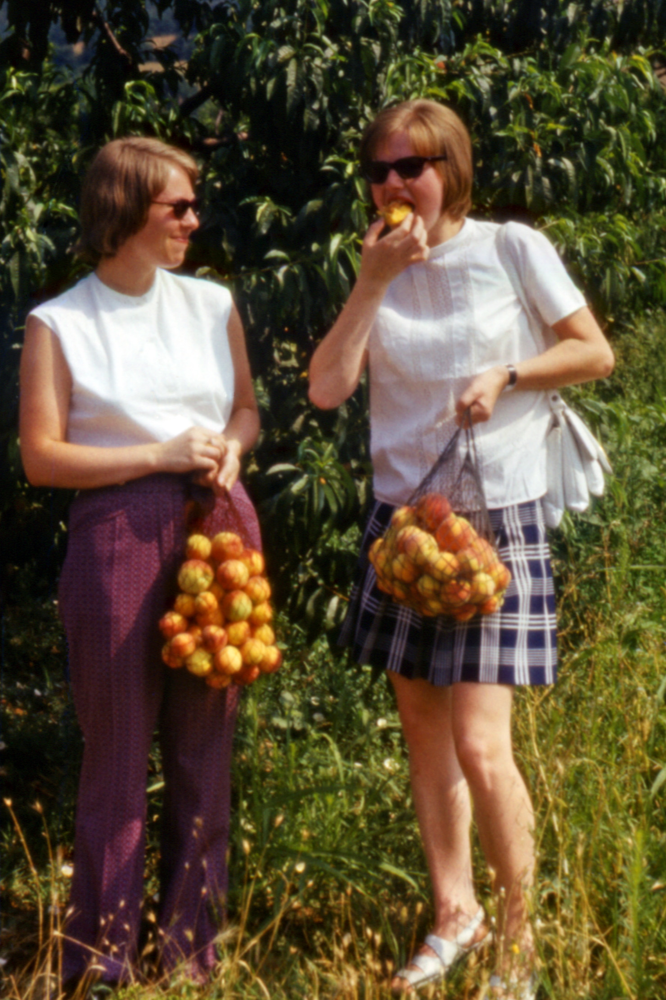

List of Relevant Objects:
Hover over the German word to see the English translation
- der Eierbecher
- das Einkaufsnetz
- der Mixer



To interact with the objects above, ask them these 20 questions (word doc). This activity developed by members of the Material Culture Caucus of American Studies Association.